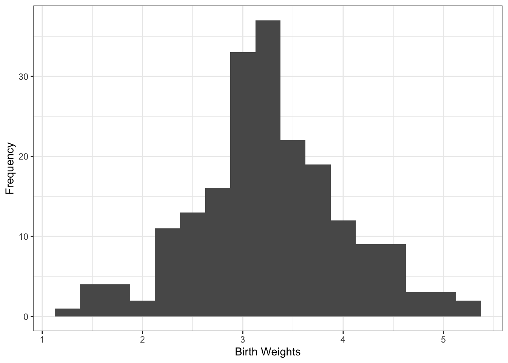

── Attaching core tidyverse packages ──────────────────────── tidyverse 2.0.0 ──
✔ dplyr 1.1.4 ✔ readr 2.1.5
✔ forcats 1.0.0 ✔ stringr 1.5.2
✔ ggplot2 4.0.0 ✔ tibble 3.3.0
✔ lubridate 1.9.4 ✔ tidyr 1.3.1
✔ purrr 1.1.0
── Conflicts ────────────────────────────────────────── tidyverse_conflicts() ──
✖ dplyr::filter() masks stats::filter()
✖ dplyr::lag() masks stats::lag()
ℹ Use the conflicted package (<http://conflicted.r-lib.org/>) to force all conflicts to become errors
library(nimble)
nimble version 1.3.0 is loaded.
For more information on NIMBLE and a User Manual,
please visit https://R-nimble.org.
Note for advanced users who have written their own MCMC samplers:
As of version 0.13.0, NIMBLE's protocol for handling posterior
predictive nodes has changed in a way that could affect user-defined
samplers in some situations. Please see Section 15.5.1 of the User Manual.
Attaching package: 'nimble'
The following object is masked from 'package:stats':
simulate
The following object is masked from 'package:base':
declare
library(coda)
Assessed Tutorial 3 Tutorial 3 is assessed. The assessed questions (not all are assessed!) should be answered within the corresponding Moodle Quiz, by Wednesday 1 October, 2pm.
The tutorial aims to help you practice producing posterior distributions and summaries using Nimble, and assess the convergence of MCMC algorithms.
Tutorial 3 Moodle Quiz
Answer questions b(i), b(ii), b(iii), b(iv), b(v), b(viii), c(i), c(ii), c(iv), c(vi), using the corresponding Moodle quiz. There are 12 marks overall.
The Quiz will open on Friday 26 September at 9am and close on Wednesday 1 October at 2pm. Note that the quiz only allows 1 final submitted attempt, So, you should only press the Submit all and finish button once. You can revise your answers, but not after you have pressed this button!
Note also that attempts that have not been submitted before the deadline, will be automatically submitted on Wednesday 1 October at 2pm.
Part A
The data
Consider birth weight data ùë§ = (ùë§1, ‚Ķ, ùë§200), in Kg, from 200 births at Hospital H. The data are given in the R workspace file Birth_weights_Tutorial_3 in the Tutorials folder in Moodle. The data file also contains binary information on the Index of Multiple Deprivation (IMD) of the mother. 0 denotes high deprivation (index from 1 to 5), while 1 denotes low deprivation (index from 6 to 10). Note the counter-intuitive interpretation of the IMD values on the scale from 1 to 10, and subsequently on the binary scale.
Plot the data, both ignoring and taking into account the IMD variable.
d |>ggplot(aes(x = bw)) +geom_histogram(binwidth =0.25) +theme_bw() +labs(x ="Birth Weights", y ="Frequency")

d |>ggplot(aes(x = bw)) +geom_histogram(binwidth =0.25) +# coord_flip() +facet_grid(~ imd_plot) +theme_bw() +scale_y_continuous(breaks =NULL) +labs(y ="", x ="Birth Weight (Kg)")
What is the sample mean of the 200 birth weights?
m <-mean(d$bw)paste0("The mean birth weight in the sample is ", round(m, 3), " kilograms.")
[1] "The mean birth weight in the sample is 3.256 kilograms."
What is the sample variance of the 200 observations?
v <-var(d$bw)paste0("The variance of the sample birth weight is ", round(v, 3), " kilograms.")
[1] "The variance of the sample birth weight is 0.557 kilograms."
What is the sample mean of the high-deprivation birth weights?
m_hd <-mean(d$bw[d$imd ==0])paste0("The mean birth weight in the high-deprivation sample is ", round(m_hd, 3), " kilograms.")
[1] "The mean birth weight in the high-deprivation sample is 3.102 kilograms."
What is the sample mean of the low-deprivation birth weights?
m_ld <-mean(d$bw[d$imd ==1])paste0("The mean birth weight in the low-deprivation sample is ", round(m_ld, 3), " kilograms.")
[1] "The mean birth weight in the low-deprivation sample is 3.409 kilograms."
Part B
# Revisit the first example in Section 1.2.2 of your notes. # X[i] is the waiting time until speaking to a human adviser,# i, i=1,...,n. # Exponential likelihood given \lambda. X[i]~Exp(\lambda)# 1/lambda is the average waiting time# Assume n=6, with \xbar=0.9# Gamma prior on \lambda################################################################################################################################# Specify the statistical modelNcode <-nimbleCode({# Specify the likelihood:for (i in1:N){ x[i] ~dnorm(mu, tau) }# to generate values for the average waiting time, given the \lambda samples# averagewaitingtime<-1/lambda prior_mu <-3 prior_var <-4 prior_precision <-1/prior_var prior_tau_a <-0.1 prior_tau_b <-0.1# Prior specification: mu ~dnorm(prior_mu, prior_precision) # Gamma prior with known parameters c and d tau ~dgamma(prior_tau_a, prior_tau_b)})
# Values for some constants in the modelN_constants <-list(N =200) # for a prior that is not very informative# ExpGammaConsts <- list(N = 6, c=100, d=120) # for a very informative prior# The data valuesN_data <-list(x=d$bw)# For no data at all! Just to see what the prior(s) look like, as a sanity check!# ExpGammaData <- list(x=c(NA,NA,NA,NA,NA,NA))# one set of initial values before building the model initials <-list(mu=1, tau =0.5) # missing data are random variables # and need to be initialised too. # Nimble can do this by sampling from the priors. # to build the modelNmod <-nimbleModel(code = Ncode, name ="Nmod", constants = N_constants, data = N_data, inits<-initials)
Defining model
Building model
Setting data and initial values
Running calculate on model
[Note] Any error reports that follow may simply reflect missing values in model variables.
Checking model sizes and dimensions
# To compile the modelCNmod <-compileNimble(Nmod)
Compiling
[Note] This may take a minute.
[Note] Use 'showCompilerOutput = TRUE' to see C++ compilation details.
# set up the monitored quantities. Default is all of the random quantitiesNmodConf <-configureMCMC(Nmod, monitors =c('mu',"tau"), print =TRUE)
===== Monitors =====
thin = 1: mu, tau
===== Samplers =====
conjugate sampler (2)
- tau
- mu
# build the MCMC algorithmNmodMCMC <-buildMCMC(NmodConf)# compile the MCMC chain CNmodMCMC <-compileNimble(NmodMCMC, project = Nmod)
Compiling
[Note] This may take a minute.
[Note] Use 'showCompilerOutput = TRUE' to see C++ compilation details.
########################################################################################### POSTERIOR SAMPLES IN CODA FORMAT TO GET MORE EASILY PLOTS AND DIAGNOSTICS #####################################################################################set.seed(10)NmodInits <-list(list(mu =1, tau =0.5), list(mu =10, tau =2))# note that number of iterations niter contains the number of burn-in samplesposterior <-runMCMC(CNmodMCMC, niter =10000, thin=1, nburnin=1000,summary =TRUE, WAIC =FALSE, samples =TRUE, nchains=2,samplesAsCodaMCMC =TRUE,inits = NmodInits)
batchSE(posterior$samples$chain1,batchSize=100) # For MC errors (only one chain is used.)
mu tau
0.0005182322 0.0019458197
eff_s_s_mu <-effectiveSize(posterior$samples$chain1[ , "mu"])cat("The effective sample size for mu for Chain 1 is",eff_s_s_mu)
The effective sample size for mu for Chain 1 is 8172.249
eff_s_s_tau <-effectiveSize(posterior$samples$chain1[ , "tau"])cat("The effective sample size for tau for Chain 1 is",eff_s_s_tau)
The effective sample size for tau for Chain 1 is 8925.751
autocorr.plot(posterior$samples$chain1)
Neither of these plots show concerning autocorrelation among the samples in chain 1.
autocorr.plot(posterior$samples$chain2)
Neither of these plots show concerning autocorrelation among the samples in chain 2.
gelman.diag(combinedchains)
Potential scale reduction factors:
Point est. Upper C.I.
mu 1 1
tau 1 1
Multivariate psrf
1
gelman.plot(combinedchains)
It appears that our chain length is not sufficient for the tau estimation chain to fully converge based on the between and within variances of the chains. The chains for mu do seem to have converged.
b_summary <-as.data.frame(posterior$summary$all.chains)paste0("The posterior mean birth weight of the entire sample is ", round(b_summary$Mean[1], 3), " kilograms.")
[1] "The posterior mean birth weight of the entire sample is 3.255 kilograms."
paste0("The posterior variance in birth weight of the entire sample is ", round(b_summary$Mean[2], 3), " kilograms.")
[1] "The posterior variance in birth weight of the entire sample is 1.79 kilograms."
From Prof: set up a model here with two mean parameters, one which is the mean of the high deprevation group, the other is the difference between the two means
# Values for some constants in the modelN_constants_c <-list(N =200) # The data valuesN_data_c <-list(x = d$bw, imd = d$imd)# one set of initial values before building the model initials_c <-list(mu1 =1, diff =0.5, tau =0.5) # missing data are random variables and need to be initialised too. # Nimble can do this by sampling from the priors. # to build the modelNmod_c <-nimbleModel(code = Ncode_c, name ="Nmod_c", constants = N_constants_c, data = N_data_c, inits<-initials_c)
Defining model
Building model
Setting data and initial values
Running calculate on model
[Note] Any error reports that follow may simply reflect missing values in model variables.
Checking model sizes and dimensions
# To compile the modelCNmod_c <-compileNimble(Nmod_c)
Compiling
[Note] This may take a minute.
[Note] Use 'showCompilerOutput = TRUE' to see C++ compilation details.
# set up the monitored quantities. Default is all of the random quantitiesNmodConf_c <-configureMCMC(Nmod_c, monitors =c('mu1', 'diff', "tau"), print =TRUE)
# build the MCMC algorithmNmodMCMC_c <-buildMCMC(NmodConf_c)# compile the MCMC chain CNmodMCMC_c <-compileNimble(NmodMCMC_c, project = Nmod_c)
Compiling
[Note] This may take a minute.
[Note] Use 'showCompilerOutput = TRUE' to see C++ compilation details.
########################################################################################### POSTERIOR SAMPLES IN CODA FORMAT TO GET MORE EASILY PLOTS AND DIAGNOSTICS #####################################################################################set.seed(10)NmodInits_c <-list(list(mu1 =3, diff =0.3, tau =1.8), list(mu1 =3, diff =0.3, tau =1.8))# note that number of iterations niter contains the number of burn-in samplesposterior_c <-runMCMC(CNmodMCMC_c, niter =10000, thin=1, nburnin=1000, summary =TRUE, WAIC =FALSE, samples =TRUE, nchains=2, samplesAsCodaMCMC =TRUE,inits = NmodInits_c)
For both the mu and diff chains, these autocorrelation plots show that there are issues with autocorreltaion of observations in the mu and diff estimation chains when the lag is less than 5.
autocorr.plot(posterior_c$samples$chain2)
For both the mu and diff chains, these autocorrelation plots show that there are issues with autocorreltaion of observations in the mu and diff estimation chains when the lag is less than 5.
gelman.diag(combinedchains)
Potential scale reduction factors:
Point est. Upper C.I.
diff 1 1.01
mu1 1 1.00
tau 1 1.00
Multivariate psrf
1
gelman.plot(combinedchains)
There is nothing concerning in these plots, all chains seem to converge well.
eff_s_s_mu1 <-effectiveSize(posterior_c$samples$chain1[ , "mu1"])cat("The effective sample size for mu for chain1 is",eff_s_s_mu1)
The effective sample size for mu for chain1 is 3148.415
eff_s_s_diff <-effectiveSize(posterior_c$samples$chain1[ , "diff"])cat("The effective sample size for the difference in means for chain1 is",eff_s_s_diff)
The effective sample size for the difference in means for chain1 is 3205.255
eff_s_s_tau <-effectiveSize(posterior_c$samples$chain1[ , "tau"])cat("The effective sample size for tau for chain1 is",eff_s_s_tau)
The effective sample size for tau for chain1 is 8347.28
batchSE(posterior_c$samples$chain1,batchSize=100) # For MC errors (only one chain is used.)
diff mu1 tau
0.002052878 0.001438420 0.001903339
summary_c <-as.data.frame(posterior_c$summary$all.chains)paste0("The posterior mean birth weight of the entire sample is ", round(summary_c$Mean[2], 3), " kilograms.")
[1] "The posterior mean birth weight of the entire sample is 3.098 kilograms."
paste0("The posterior variance in birth weight of the entire sample is ", round(summary_c$Mean[1] + summary_c$Mean[2], 3), " kilograms.")
[1] "The posterior variance in birth weight of the entire sample is 3.412 kilograms."